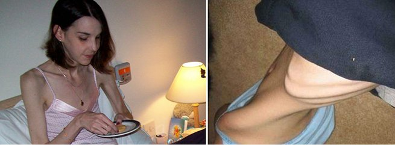

Der Missbrauch neuer Fettverbrenner verursacht Dystrophie
Um dem Modellook zu entsprechen, verlieren viele Frauen und Mädchen, um anerkannt zu werden. Inzwischen ist es einfacher als je zu zuvor, seitdem der kraftvolle und natürliche Fettverbrenner '' auf dem Markt ist. Die Ärzte haben Alarm geschlagen!
Ab dem Moment, in dem '' auf dem Markt war, häuften sich mehr und mehr Fälle von drastischer Gewichtsabnahme. Um Extrakilos so schnell wie möglich loszuwerden, konsumieren viele Menschen mehr als die Maximaldosierung. Das liegt insbesondere daran, dass diejenigen, welche schon ineffektiven grünen Kaffee oder andere Nahrungsergänzungsmittel versucht haben, welche nur Ergebnisse zeigen, wenn man sie dauerhaft einnimmt, den gleichen Fehler mit machen. Dieser Fettkiller führt wirklich dazu, dass Fettzellen verschwinden und deswegen sollte es auch genau nach Gebrauchsanweisung verwendet werden. Weil sie so aufgeregt darüber sind, dass sie schon in der ersten Woche nach Beginn der Anwendung Gewicht verlieren, verlieren die Menschen die Kontrolle, um noch schnellere Ergebnisse zu erhalten. Alle, die sich an den Abnehmplan von gehalten haben, berichteten, das sich die Körpermasse um bis zu 10kg in einer Woche reduzieren kann. In einem Monat verloren einige 15-20kg! Die Begeisterung wurde dann aber schnell von Angst abgelöst. Die “Abnehmenden” verloren die Kontrolle über ihr eigenes Essverhalten: Obwohl sie Nahrungsmittel aßen, die reich an Kalorien waren, nahmen sie kein einziges Gramm wieder zu. Selbst, nachdem sie zu ihrer gewohnten Ernährung zurückgekehrt waren, nahmen die Frauen weiter ab anstatt zu.

Als Tausende Personen interviewt wurden, welche zu schnell Gewicht verloren, als sie benutzen, haben keine ungewöhnlichen Symptome, wie Übelkeit, Erbrechen oder Schwäche, nachdem sie das Produkt eingenommen hatten.
Laut einer Studie aus einem unabhängigen Labor:
führt zu einem schnellen Gewichtsverlust und macht Ihre Verdauung um das 5-Fache schneller! Darum loben Frauen auf der ganzen Welt diese besonderen Vorteile dieses Abnehmproduktes und enden dann bei einer Überdosierung!
beinhaltet keine Toxine und kann der menschlichen Gesundheit nicht schaden. 30g dieses Produktes beinhalten die täglich empfohlene Dosis Liponsäure, welche für den Ausgleich des Fetts im menschlichen Körper verantwortlich ist. Nehmen Sie also tägliche die empfohlene Dosis ein, dann werden Sie 3-5kg pro Woche verlieren, ohne Ihrer Gesundheit zu schaden. Eine Überdosierung kann jedoch eine negative Auswirkung auf Ihre Gesundheit haben."
Das nationale Ernährungsinstitut warnt: Extrem schnelles Abnehmen führt zu wahren Gesundheitsproblemen!
Hier ist ein Link zum zugelassenen Produzenten:
Verglichen mit grünem Kaffee und anderen Ergänzungsmitteln zum Gewichtsverlust, welche nur 23,7% der übergewichtigen Menschen helfen, ist ein Fettkiller mit einem sehr hohen Index von 97,8%. Achten Sie aber auf das Risiko, welches durch die Begeisterung viele Leute zu einer Überdosierung bringt. Denken Sie daran, dass das Abnehmen und Tragen von kleineren Größen ein langsamer und harmloser Prozess sein sollte. Darum sollten Sie immer darauf achten, das die tägliche Menge nur 30g beträgt, wenn Sie sich dazu entschieden haben, mit diesem Produkt abzunehmen.
Achten Sie auf Ihre Gesundheit!


Kommentare (47/47)
Kommentare